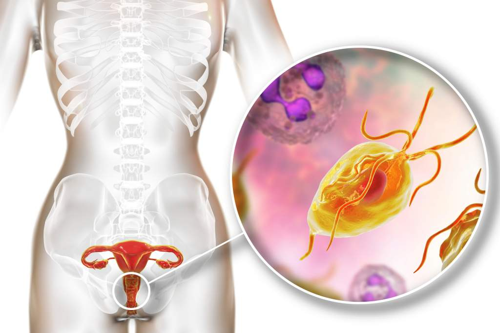

Apa itu Trikomoniasis?
Trikomoniasis adalah penyakit menular seksual (PMS) yang disebabkan oleh parasit
protozoa
Trichomonas vaginalis. Parasit ini menyebar terutama melalui hubungan
seksual tanpa kondom.
Infeksi ini umum terjadi dan sering tidak menimbulkan gejala, terutama pada pria.
Namun, tetap bisa menular ke pasangan seksual dan menyebabkan komplikasi bila tidak
diobati.
Cara Penularan
- Hubungan seksual vaginal tanpa kondom
- Berbagi alat bantu seks yang tidak dibersihkan
- Jarang menular melalui hubungan oral atau anal
Gejala Trikomoniasis
Sebagian besar penderita tidak menyadari terinfeksi. Namun, bila muncul, gejalanya
berbeda antara pria dan wanita.
Gejala pada Wanita:
- Keputihan berbau tidak sedap, berbuih, berwarna kuning atau hijau
- Rasa gatal atau terbakar di vagina
- Rasa sakit saat buang air kecil atau berhubungan seksual
- Kemerahan atau iritasi di area genital
Gejala pada Pria:
- Rasa panas saat buang air kecil
- Keluarnya cairan dari penis
- Rasa gatal atau iritasi di dalam penis
- Sering kali tanpa gejala
Komplikasi
Jika tidak diobati, trikomoniasis dapat menyebabkan:
- Risiko lebih tinggi terkena atau menularkan HIV
- Infeksi saluran reproduksi
- Kehamilan dengan risiko kelahiran prematur
- Masalah kesuburan
Pencegahan Trikomoniasis
- Gunakan kondom setiap kali berhubungan seksual
- Hindari berganti-ganti pasangan seksual
- Lakukan pemeriksaan IMS secara rutin
- Bersihkan alat bantu seks sebelum dan sesudah digunakan
- Konsultasi dengan dokter jika mengalami gejala
Pengobatan
Trikomoniasis dapat disembuhkan dengan mudah menggunakan antibiotik. Biasanya dokter
akan meresepkan:
- Metronidazole atau Tinidazole
- Pengobatan juga diberikan kepada pasangan seksual
- Hindari hubungan seksual selama masa pengobatan
- Ikuti dosis dan anjuran dokter sampai tuntas
⚠️ Penting untuk Diingat!
Trikomoniasis bisa tidak bergejala, tapi tetap menular. Pemeriksaan dan pengobatan
dini penting untuk mencegah komplikasi dan penularan ke orang lain.
Bila Anda merasa berisiko atau memiliki gejala, segera periksakan diri ke tenaga
medis profesional.